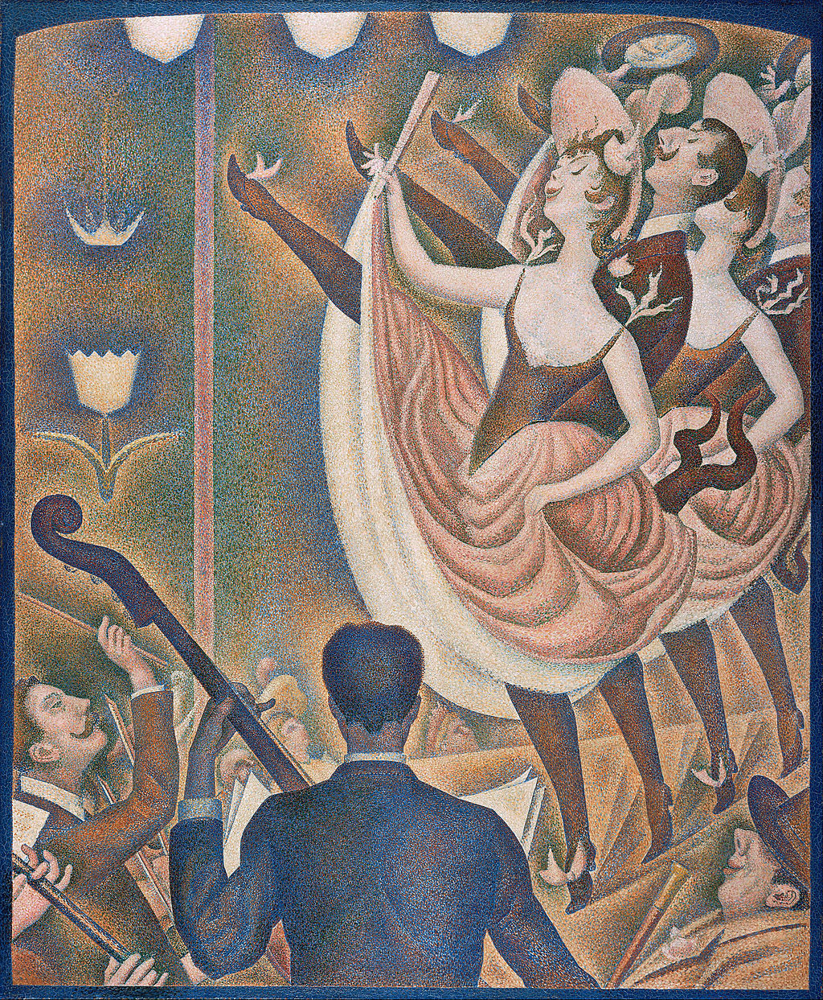

<head>
<meta charset="UTF-8" />
<meta name="keywords" content="drawing, painting" />
<meta name="description" content="drawings by Sunjy" />
<title>Sunjy</title>
<link rel="shortcut icon" type="image/x-icon" href="../../mImages/mCommon/favicon.ico" media="screen" />
<link rel="stylesheet" type="text/css" href="../../mCsses/mCommon/mCssA.css" />
<link rel="stylesheet" type="text/css" href="../../mCsses/mCommon/mCssB.css" />
<link rel="stylesheet" type="text/css" href="../../mCsses/mCommon/mCssC.css" />
<link rel="stylesheet" type="text/css" href="../../mCsses/mCommon/mCssD.css" />
<link rel="stylesheet" type="text/css" href="../../mCsses/mContent/mCssA.css" />
<link rel="stylesheet" type="text/css" href="../../mCsses/mContent/mCssB.css" />
<link rel="stylesheet" type="text/css" href="../../mCsses/mContent/mCssC.css" />
<link rel="stylesheet" type="text/css" href="../../mCsses/mContent/mCssD.css" />
</head>
<script type="text/javascript" src="../../mScripts/mContent/mContentAA.js" /></script>
<script type="text/javascript" src="../../mScripts/mContent/mContentAB.js" /></script>
<script type="text/javascript" src="../../mScripts/mContent/mContentAC.js" /></script>
<script type="text/javascript" src="../../mScripts/mContent/mContentAD.js" /></script>
<script type="text/javascript"></script> 
<script type="text/javascript">
document.write('<div class="mImgAbsolute"></div>');
/*
document.write('<p class="mFontSizeBColor" />From a white paper...</p>');
document.write('<table class="center"><tr><td>');
document.write('');
document.write('</td></tr></table>');
*/
</script>


<script type="text/javascript">
document.write('<p class="mFontSizeBColor" />Le Chahut</p>');
document.write('<p class="mFontSizeSColor" />“Le Chahut” by Georges Seurat representing the Can-Can dance at the Moulin Rouge in the artist’s pointillist technique. The Can-Can is a high-energy, physically demanding dance that became a famous French music-hall dance in the 1840s.<br><br>The Can-Can or “Le Chahut” in French was originally danced by both sexes, as depicted by Seurat. The dance featured the vigorous manipulation of skirts and petticoats by the women, along with high kicks.<br><br>Musicians occupy the lower left of the painting, one of whom is centrally located, his back turned toward the viewer, with his double-bass erected to the left. A row of dancers, two women, and two men with their legs raised occupy the upper right.<br><br>They are characterized by curves and rhythmic repetition, creating a sense of dynamical movement.<br><br>The background consists of ornate cabaret-style lighting fixtures, and a few members of the audience sitting in the front row, their faces looking up to the performance.<br><br>On the lower right, the man in a hat is staring with the smile of sexual desire or the slyness of a male voyeur.<br><br>Seurat employed a Divisionist style, with pointillist dots of color while focusing on an upward movement of lines throughout the painting.<br><br>The work is dominated by a color scheme that tends toward the red end of the spectrum, of earth tones from a palette of browns, tans, warm grays, and blues.<br><br>A deeper blue border painted around the edge of the canvas culminates in a shallow arch on the upper corners.<br><br>The modulation of light and shadow throughout the work is obtained by the use of small dots of color juxtaposed side by side while alternating in intensity and concentrations.<br><br>The dots are meant to be fused in the eye of the viewer to create the impression of mixed colors when observed from a distance.<br><br>This painting became the target of art critics and was widely discussed among Symbolist critics.  This painting influenced the Fauves, Cubists, Futurists, and Orphists.<br><br>Can-can<br><br>The can-can is believed to have evolved from the quadrille, a social dance for four couples. The dance was considered scandalous, and for a while, there were attempts to suppress it.<br><br>This attitude may have been because, in the 19th century, women wore pantalettes, which had an open crotch, and the high kicks were intentionally revealing.<br><br>There is no evidence that can-can dancers wore special closed underwear, although it was claimed by the Moulin Rouge management that they did not permit dancers to perform in “revealing undergarments.”<br><br>As the dance became more popular, professional performers emerged, and women performers became much more widely known. By the 1890s, when this painting was created, it was possible to earn a living as a full-time dancer.<br><br>These professional dancers developed the can-can moves that were later incorporated in the spectacular “French Can-can,” which he devised at the Moulin Rouge in the 1920s. This modern style was a combination of the individual style of the Parisian dance-halls and the chorus-line style of British and American music halls.<br><br>Divisionism<br><br>Divisionism was the characteristic style in Neo-Impressionist painting defined by the separation of colors into individual dots or patches which interacted optically.<br><br>The viewer was required to combine the colors optically instead of the artist physically mixing pigment. Divisionistssts believed they were achieving the maximum luminosity scientifically possible.<br><br>Georges Seurat founded the style around 1884. Divisionism developed along with another technique, Pointillism, which is explicitly defined by the use of dots of paint, which does not necessarily focus on the separation of colors.<br><br>Pointillism<br><br>Pointillism is a technique of painting in which small, distinct dots of color are applied in patterns to form an image. Georges Seurat and Paul Signac developed the method in 1886, branching from Impressionism.<br><br>The movement that Seurat began with this technique is known as Neo-impressionism. The Divisionists used a similar process of patterns to form images, though with broader cube-like brushstrokes.<br></p>');
document.write('<table class="center" /><tr><td>');
document.write('<br>The Can-Can or “Le Chahut” in French was originally danced by both sexes, as depicted by Seurat. The dance featured the vigorous manipulation of skirts and petticoats by the women, along with high kicks.<br><br>Musicians occupy the lower left of the painting, one of whom is centrally located, his back turned toward the viewer, with his double-bass erected to the left. A row of dancers, two women, and two men with their legs raised occupy the upper right.<br><br>They are characterized by curves and rhythmic repetition, creating a sense of dynamical movement.<br><br>The background consists of ornate cabaret-style lighting fixtures, and a few members of the audience sitting in the front row, their faces looking up to the performance.<br><br>On the lower right, the man in a hat is staring with the smile of sexual desire or the slyness of a male voyeur.<br><br>Seurat employed a Divisionist style, with pointillist dots of color while focusing on an upward movement of lines throughout the painting.<br><br>The work is dominated by a color scheme that tends toward the red end of the spectrum, of earth tones from a palette of browns, tans, warm grays, and blues.<br><br>A deeper blue border painted around the edge of the canvas culminates in a shallow arch on the upper corners.<br><br>The modulation of light and shadow throughout the work is obtained by the use of small dots of color juxtaposed side by side while alternating in intensity and concentrations.<br><br>The dots are meant to be fused in the eye of the viewer to create the impression of mixed colors when observed from a distance.<br><br>This painting became the target of art critics and was widely discussed among Symbolist critics.  This painting influenced the Fauves, Cubists, Futurists, and Orphists.<br><br>Can-can<br><br>The can-can is believed to have evolved from the quadrille, a social dance for four couples. The dance was considered scandalous, and for a while, there were attempts to suppress it.<br><br>This attitude may have been because, in the 19th century, women wore pantalettes, which had an open crotch, and the high kicks were intentionally revealing.<br><br>There is no evidence that can-can dancers wore special closed underwear, although it was claimed by the Moulin Rouge management that they did not permit dancers to perform in “revealing undergarments.”<br><br>As the dance became more popular, professional performers emerged, and women performers became much more widely known. By the 1890s, when this painting was created, it was possible to earn a living as a full-time dancer.<br><br>These professional dancers developed the can-can moves that were later incorporated in the spectacular “French Can-can,” which he devised at the Moulin Rouge in the 1920s. This modern style was a combination of the individual style of the Parisian dance-halls and the chorus-line style of British and American music halls.<br><br>Divisionism<br><br>Divisionism was the characteristic style in Neo-Impressionist painting defined by the separation of colors into individual dots or patches which interacted optically.<br><br>The viewer was required to combine the colors optically instead of the artist physically mixing pigment. Divisionistssts believed they were achieving the maximum luminosity scientifically possible.<br><br>Georges Seurat founded the style around 1884. Divisionism developed along with another technique, Pointillism, which is explicitly defined by the use of dots of paint, which does not necessarily focus on the separation of colors.<br><br>Pointillism<br><br>Pointillism is a technique of painting in which small, distinct dots of color are applied in patterns to form an image. Georges Seurat and Paul Signac developed the method in 1886, branching from Impressionism.<br><br>The movement that Seurat began with this technique is known as Neo-impressionism. The Divisionists used a similar process of patterns to form images, though with broader cube-like brushstrokes.<br>" />');
document.write('</td></tr></table>');
</script>


